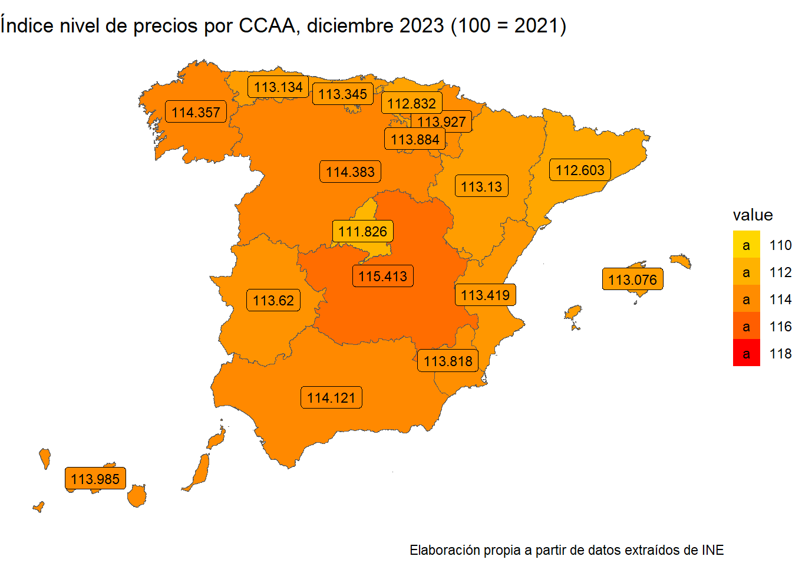

Vamos a utilizar los datos del paquete pxR, para poder cargar los datos del INE que necesitamos en el trabajo. Primeramente, instalamos los paquetes necesarios y cargamos las librerías. A continuación, descargamos los dicheros de datos.
Código
#remotes::install_github("perezp44/pjpv.curso.R.2022")#install.packages("pxR")#install.packages("downloader")#install.packages("readxl")#install.packages("mapSpain")#install.packages("kableExtra")library(kableExtra)library(mapSpain)library(tidyverse)library(data.table)library(rlist)library(fs)library(curl)library(rio)library(readxl)library(downloader)library(writexl)library(dplyr)library(ggthemes)library(ggExtra)library(pxR)library(patchwork)#Descargamos el primer fichero de datos, que contiene los datos a nivel nacionalurl <-"https://www.ine.es/jaxiT3/files/t/es/px/50902.px?nocab=1"aa <-read.px(url)#Lo convertimos a CSV para simplificar y creamos un dataframewrite.csv(aa, file ="data.csv")IPV <-read.csv("data.csv")rm(list =ls()[!ls() %in%c("IPV")])dir_create("datos")#Los guardamos sin arreglarwrite.csv(IPV, file ="./datos/ipv.csv")#Este segundo archivo contiene los datos a nivel autonómicourl2 <-"https://www.ine.es/jaxiT3/files/t/es/px/50913.px?nocab=1"ab <-read.px(url2)#Lo convertimos a CSV para simplificar y creamos un dataframewrite.csv(ab, file ="dataCCAA.zip")CCAA <-read.csv("dataCCAA.zip")#Los guardamos sin arreglarwrite.csv(CCAA, file ="./datos/dataCCAA.zip")# Para que ab sea un dataframe y no una lista:df_ab <-as.data.frame(ab$DATA$value)
Índice de precios
En el primer gráfico tenemos el índice del nivel de precios desde el año 2002 hasta la actualidad. Este índice es equivalente a la inflación acumulada. Pues lo que hace es acumular las tasas de crecimiento mensuales.
Código
df <- IPV %>% dplyr::rename(Grupo = Grupos.ECOICOP, Dato = Tipo.de.dato)dff <- df %>%filter (Grupo =="Índice general", Dato =="Índice")p <-ggplot(dff, aes(x = Periodo, y = value, group =1)) +geom_line(size =1.08) +scale_x_discrete(breaks = dff$Periodo[substr(dff$Periodo, 6, 7) =="01"], labels =function(x) substr(x, 1, 4)) +theme(axis.text.x =element_text(angle =45, hjust =1)) +labs(x ="Año", y ="Índice", title ="Índice nivel de precios (Base100 = 2021)") +theme_stata() +rotateTextX()#Utilizamos plotly para hacer el gráfico interactivoplotly::ggplotly(p)
Como podemos observar, la inflación evoluciona de manera más o menos uniforme desde el inicio del gráfico hasta el año 2021 con algunos periodos de estancamiento (2013-2016 y 2020-2021). Estos periodos no son especialmente extraños, ya que a nivel europeo se han reproducido situaciones similares. Cabe mencionar cómo en prácticamente todos los años repiten un patrón de crecimiento de los precios hasta mitad de año, para luego decrecer ligeramente y volver a crecer hasta final de año. Inferimos que esto se debe a la bajada de la actividad económica que tiene lugar en verano todos los años.
Lo más destacable es sin duda el crecimiento que tiene lugar desde el año 2021 hasta el final del 2023, el cual es mucho mayor al del resto de la serie histórica. Como sabemos, en este periodo la mayoría de las economías occidentales ha experimentado elevadas tasas de inflación, por lo que no es un fenómeno exclusivo de España.
Mapa de comunidades autónomas
Bueno pues vamos a hacer algún gráfico, pero claro antes he de cargar los paquetes
Código
df_ab <- df_ab %>%dplyr::rename(CCAA = Comunidades.y.Ciudades.Autónomas, Datos = Tipo.de.dato, Grupo = Grupos.ECOICOP)prov <- pjpv.curso.R.2022::LAU2_prov_2020_canariasccaa <- prov %>% dplyr::group_by(ine_ccaa, ine_ccaa.n, ine_ccaa.n.pjp) %>% dplyr::summarise() %>% dplyr::ungroup()ccaa <- ccaa %>% dplyr::rename(CCAA = ine_ccaa.n) %>%filter(!CCAA %in%c("Ceuta", "Melilla"))df_CCAA <- df_ab %>%filter(!CCAA %in%c("Nacional", "18 Ceuta", "19 Melilla")) %>%filter(Grupo =="Índice general", Datos =="Índice") %>%filter(Periodo =="2023M12")df_CCAA <- df_CCAA %>%mutate(CCAA =case_when( CCAA =="01 Andalucía"~"Andalucía", CCAA =="02 Aragón"~"Aragón", CCAA =="03 Asturias, Principado de"~"Asturias, Principado de", CCAA =="04 Balears, Illes"~"Balears, Illes", CCAA =="05 Canarias"~"Canarias", CCAA =="06 Cantabria"~"Cantabria", CCAA =="07 Castilla y León"~"Castilla y León", CCAA =="08 Castilla - La Mancha"~"Castilla-La Mancha", CCAA =="09 Cataluña"~"Cataluña", CCAA =="10 Comunitat Valenciana"~"Comunitat Valenciana", CCAA =="11 Extremadura"~"Extremadura", CCAA =="12 Galicia"~"Galicia", CCAA =="13 Madrid, Comunidad de"~"Madrid, Comunidad de", CCAA =="14 Murcia, Región de"~"Murcia, Región de", CCAA =="15 Navarra, Comunidad Foral de"~"Navarra, Comunidad Foral de", CCAA =="16 País Vasco"~"País Vasco", CCAA =="17 Rioja, La"~"Rioja, La", TRUE~ CCAA)) %>%filter(!CCAA %in%c("Nacional", "18 Ceuta", "19 Melilla"))conjunto <-full_join(ccaa, df_CCAA, by ="CCAA")library(patchwork)escala_limites <-c(110, 118)p4 <-ggplot(conjunto, aes(fill = value)) +geom_sf() +geom_sf_label(aes(label =as.character(value)), size =3, color ="black") +scale_fill_gradient(guide ="legend",limits = escala_limites,low ="#FFD700",high ="#FF0000" ) +labs(title ="Índice nivel de precios por CCAA, diciembre 2023 (100 = 2021)", caption ="Elaboración propia a partir de datos extraídos de INE") +theme_void()p4

En este mapa de coropletas tenemos el valor final de la serie histórica anterior pero esta vez para cada comunidad autónoma. Como podemos observar, el nivel es bastante homogéneo a lo largo de todo el país. Sin embargo, destaca la diferencia que hay entre dos regiones tan próximas como son Castilla-La Mancha y Madrid, que son a su vez las regiones con el nivel más alto y más bajo respectivamente. Suponemos que la diferencia se debe a la composición de los sectores productivos de cada región.
Dado el llamativo crecimiento del índice del nivel de precios a partir de 2021, vamos ahora a observar más de cerca este periodo.
El reciente ciclo inflacionista
Código
df3 <- df %>%filter(Dato =="Variación mensual", Grupo =="Índice general") %>%slice(1:35)p2 <-ggplot(data = df3,aes(x = Periodo, y = value)) +geom_col(fill ="#000080") +theme_minimal()+theme_stata() +labs(title ="Evolución de la Inflación España", caption ="Elaboración propia a partir de datos extraídos del INE", x ="Año", y ="Tasa de inflación") +theme(axis.text.x =element_text(angle =90, vjust =0.5, hjust=1), plot.title =element_text(face ="bold", hjust =0.5), plot.caption =element_text(hjust =0.5))df4 <- df %>%filter(Dato =="Variación anual", Grupo =="Índice general") %>%slice(1:35)p5 <-ggplot(df4, aes(x = Periodo, y = value, group =1)) +geom_line(size =1.08, color ="red") +theme(axis.text.x =element_text(angle =45, hjust =1)) +labs(x ="Año", y ="Índice", title ="Índice nivel de precios (Base100 = 2021)") +theme_stata() +rotateTextX() + p2df3 <- df3 %>%arrange(Periodo)df4 <- df4 %>%arrange(Periodo)# Fusionar los gráficos p2 y p5p_combined <-ggplot() +geom_col(data = df3, aes(x = Periodo, y = value), fill ="#000080") +geom_line(data = df4, aes(x = Periodo, y = value, group =1), size =1.08, color ="red") +theme_minimal() +theme(axis.text.x =element_text(angle =45, hjust =1), plot.title =element_text(face ="bold", hjust =0.5), plot.caption =element_text(hjust =0.5)) +labs(title ="Evolución de la Inflación en España", caption ="Elaboración propia a partir de datos extraídos del INE", x ="Año", y ="Tasa de inflación") +theme_stata() +rotateTextX()plotly::ggplotly(p_combined)
En este gráfico podemos observar en forma de columnas las tasas de inflación mensuales (la variación de los precios mes a mes) junto con las tasas de variación anual de esos mismos meses (la variación de los precios respecto a ese mismo mes del año anterior). Aquí se puede observar cómo las elevadas tasas de inflación mensual han sido elevadas desde los inicios de 2021 hasta mediados de 2022. Esto se ha traducido en tasas de inflación interanual que no habíamos visto en nuestro país desde hace prácticamente 40 años. La tasa más elevada que hemos llegado a ver en este ciclo inflacionario fue la de julio de 2022, con un 10’8% respecto a julio de 2021. A partir de ahí el ritmo al que crecían los precios dejó de aumentar, pero no los precios. En los meses posteriores se observa cómo la tasa de inflación interanual empieza a ser más baja, pero no solo por las tasas mensuales reducidas, también por el efecto base: el incremento de julio de 2021 a julio de 2022 fue tal que, la variación hasta julio de 2023 es mucho más pequeña aunque solo sea porque ahora se calcula sobre una base mucho mayor. Pero eso no significa que los precios estén cayendo. Buena prueba de ello es el primer gráfico. Probablemente sería más interesante centrarse en las causas de la inflación y no tanto en su evolución, pero el tema se nos escapa.
Os dejamos por aquí un reciente estudio sobre las causas de la inflación en Estados Unido y en Europa.
Ahora lo que queremos es ver qué meses de la serie histórica de la que disponemos (de 2002 a la actualidad) han sido los que han tenido una mayor tasa de inflación mensual. Para ello tenemos el siguiente cuadro:
Salta a la vista que los 3 primeros meses con mayor variación mensual han sido de este ciclo inflacionista, 5 de los 12 primeros datos lo son. El primer dato, con un 3% en marzo de 2022 es, con diferencia el dato más elevado que tenemos. Para que nos hagamos a la idea, ese dato anualizado nos daría una tasa de inflación del 42’58%, poniéndonos a la altura de países como Turquía o Argentina. El segundo es junio de 2022 con un 1’9% y el tercero es de octubre de 2021 con 1’8%. Hay también varios datos de entre 2004 y 2007. Esto también es lógico, ya que durante estos años hubo inflación asociada al crecimiento económico y a la gestación de la burbuja inmobiliaria.
Para terminar, queremos observar qué bienes o servicios son los que tienen tasas de variación mensuales más elevadas. Para ello tenemos el siguiente gráfico, donde se muestran los 24 meses con un mayor aumento de precios para cualquier bien o servicio determinado.
Meses con mayores tasas según porducto
Código
df9 <- df %>%filter(Dato =="Variación mensual") %>% dplyr::rename(Variacion_mensual = value) %>%slice_max(n =24, order_by = Variacion_mensual) %>%select(-(X)) %>%arrange(Variacion_mensual)p9 <-ggplot(data = df9,aes(x =reorder(Periodo, Variacion_mensual), y = Variacion_mensual, fill = Grupo)) +geom_col() +theme_minimal()+theme_stata() +labs(title ="Mayores variaciones mensuales por sector y año", caption ="Elaboración propia a partir de datos extraídos del INE", x ="Año", y ="Tasa de inflación intermensual") +theme(axis.text.x =element_text(angle =90, vjust =0.5, hjust=1), plot.title =element_text(face ="bold", hjust =0.5), plot.caption =element_text(hjust =0.5))plotly::ggplotly(p9)
A simple vista queda claro que el bien o servicio que más sube de precio en determinados momentos es el vestido y el calzado, ocupando las 22 primeras posiciones. Sin embargo, no perdamos de vista que éstas son subidas de precios estacionales que poco tienen que ver con ciclos inflacionistas. Si observamos en qué meses ocurren estas subidas de precios del vestido y calzado veremos que son siempre en abril y en octubre, justo con el cambio de temporada hacia el verano o hacia el invierno.
Es en la posición vigésimo tercera donde encontramos algún dato que provenga del ciclo inflacionista reciente. Este es de marzo de 2022 y contiene la variación de la vivienda, agua, electricidad, gas y otros combustibles. Para ver si encontramos datos más interesantes, y que no tengan tanto que ver con picos de demanda estacional tenemos el siguiente gráfico.
Código
df10 <- df %>%filter(Dato =="Variación mensual") %>%filter(!Grupo %in%c("03 Vestido y calzado")) %>% dplyr::rename(Variacion_mensual = value) %>%slice_max(n =24, order_by = Variacion_mensual) %>%select(-X) %>%arrange(Variacion_mensual)p10 <-ggplot(data = df10,aes(x =reorder(Periodo, Variacion_mensual), y = Variacion_mensual, fill = Grupo)) +geom_col(position =position_dodge(width =0.9)) +theme_stata() +labs(title ="Mayores variaciones mensuales por sector y año", caption ="Elaboración propia a partir de datos extraídos del INE", x ="Año", y ="Tasa de inflación intermensual") +theme(axis.text.x =element_text(angle =90, vjust =0.5, hjust=1), plot.title =element_text(face ="bold", hjust =0.5), plot.caption =element_text(hjust =0.5))plotly::ggplotly(p10)
En este gráfico, ya sin vestido y calzado podemos observar tasas elevadas de sectores muy diversos. Se hace difícil encontrar patrones; aunque sí hay mese pertenecientes al reciente ciclo inflacionista, parece que la mayor parte de tasas se deben a sucesos puntuales.
Conclusión
Con esto llegamos al final del trabajo. Elaborarlo ha sido una experienia muy enriquecedora, así como cursar esta asignatura en general. Respecto a su contenido, esperamos que haya resultado ilustrativo para el lector y que le sirva para tener una perspectiva amplia de cómo se ha comportado la inflación en nuestro país en las últimas dos décadas.
Correr el código
---title: "Un vistazo a la inflación en España de las últimas dos décadas"description: "Una perpectiva amplia del comportamiento de la inflación"author: - name: Pedro Peñalver Cañigueral affiliation: Universitat de València affiliation-url: https://www.uv.esdate: 2024-01-25 categories: [trabajo BigData, Inflación] #--image: "./imagenes/batman_logo.png"title-block-banner: true #- {true, false, "green","#AA0000"}title-block-banner-color: "FFFF00" toc-depth: 3smooth-scroll: trueformat: html: #backgroundcolor: "#FFFF00" #embed-resources: true link-external-newwindow: true #css: ./assets/my_css_file.css #- CUIDADO!!!!code-tools: truecode-link: true---## Paquetes y datosVamos a utilizar los datos del paquete `pxR`, para poder cargar los datos del INE que necesitamos en el trabajo. Primeramente, instalamos los paquetes necesarios y cargamos las librerías. A continuación, descargamos los dicheros de datos.```{r}#remotes::install_github("perezp44/pjpv.curso.R.2022")#install.packages("pxR")#install.packages("downloader")#install.packages("readxl")#install.packages("mapSpain")#install.packages("kableExtra")library(kableExtra)library(mapSpain)library(tidyverse)library(data.table)library(rlist)library(fs)library(curl)library(rio)library(readxl)library(downloader)library(writexl)library(dplyr)library(ggthemes)library(ggExtra)library(pxR)library(patchwork)#Descargamos el primer fichero de datos, que contiene los datos a nivel nacionalurl <-"https://www.ine.es/jaxiT3/files/t/es/px/50902.px?nocab=1"aa <-read.px(url)#Lo convertimos a CSV para simplificar y creamos un dataframewrite.csv(aa, file ="data.csv")IPV <-read.csv("data.csv")rm(list =ls()[!ls() %in%c("IPV")])dir_create("datos")#Los guardamos sin arreglarwrite.csv(IPV, file ="./datos/ipv.csv")#Este segundo archivo contiene los datos a nivel autonómicourl2 <-"https://www.ine.es/jaxiT3/files/t/es/px/50913.px?nocab=1"ab <-read.px(url2)#Lo convertimos a CSV para simplificar y creamos un dataframewrite.csv(ab, file ="dataCCAA.zip")CCAA <-read.csv("dataCCAA.zip")#Los guardamos sin arreglarwrite.csv(CCAA, file ="./datos/dataCCAA.zip")# Para que ab sea un dataframe y no una lista:df_ab <-as.data.frame(ab$DATA$value)```## Índice de preciosEn el primer gráfico tenemos el índice del nivel de precios desde el año 2002 hasta la actualidad. Este índice es equivalente a la inflación acumulada. Pues lo que hace es acumular las tasas de crecimiento mensuales.```{r}df <- IPV %>% dplyr::rename(Grupo = Grupos.ECOICOP, Dato = Tipo.de.dato)dff <- df %>%filter (Grupo =="Índice general", Dato =="Índice")p <-ggplot(dff, aes(x = Periodo, y = value, group =1)) +geom_line(size =1.08) +scale_x_discrete(breaks = dff$Periodo[substr(dff$Periodo, 6, 7) =="01"], labels =function(x) substr(x, 1, 4)) +theme(axis.text.x =element_text(angle =45, hjust =1)) +labs(x ="Año", y ="Índice", title ="Índice nivel de precios (Base100 = 2021)") +theme_stata() +rotateTextX()#Utilizamos plotly para hacer el gráfico interactivoplotly::ggplotly(p)```Como podemos observar, la inflación evoluciona de manera más o menos uniforme desde el inicio del gráfico hasta el año 2021 con algunos periodos de estancamiento (2013-2016 y 2020-2021). Estos periodos no son especialmente extraños, ya que a nivel europeo se han reproducido situaciones similares. Cabe mencionar cómo en prácticamente todos los años repiten un patrón de crecimiento de los precios hasta mitad de año, para luego decrecer ligeramente y volver a crecer hasta final de año. Inferimos que esto se debe a la bajada de la actividad económica que tiene lugar en verano todos los años.Lo más destacable es sin duda el crecimiento que tiene lugar desde el año 2021 hasta el final del 2023, el cual es mucho mayor al del resto de la serie histórica. Como sabemos, en este periodo la mayoría de las economías occidentales ha experimentado elevadas tasas de inflación, por lo que no es un fenómeno exclusivo de España.## Mapa de comunidades autónomasBueno pues vamos a hacer algún gráfico, pero claro antes he de cargar los paquetes```{r}df_ab <- df_ab %>%dplyr::rename(CCAA = Comunidades.y.Ciudades.Autónomas, Datos = Tipo.de.dato, Grupo = Grupos.ECOICOP)prov <- pjpv.curso.R.2022::LAU2_prov_2020_canariasccaa <- prov %>% dplyr::group_by(ine_ccaa, ine_ccaa.n, ine_ccaa.n.pjp) %>% dplyr::summarise() %>% dplyr::ungroup()ccaa <- ccaa %>% dplyr::rename(CCAA = ine_ccaa.n) %>%filter(!CCAA %in%c("Ceuta", "Melilla"))df_CCAA <- df_ab %>%filter(!CCAA %in%c("Nacional", "18 Ceuta", "19 Melilla")) %>%filter(Grupo =="Índice general", Datos =="Índice") %>%filter(Periodo =="2023M12")df_CCAA <- df_CCAA %>%mutate(CCAA =case_when( CCAA =="01 Andalucía"~"Andalucía", CCAA =="02 Aragón"~"Aragón", CCAA =="03 Asturias, Principado de"~"Asturias, Principado de", CCAA =="04 Balears, Illes"~"Balears, Illes", CCAA =="05 Canarias"~"Canarias", CCAA =="06 Cantabria"~"Cantabria", CCAA =="07 Castilla y León"~"Castilla y León", CCAA =="08 Castilla - La Mancha"~"Castilla-La Mancha", CCAA =="09 Cataluña"~"Cataluña", CCAA =="10 Comunitat Valenciana"~"Comunitat Valenciana", CCAA =="11 Extremadura"~"Extremadura", CCAA =="12 Galicia"~"Galicia", CCAA =="13 Madrid, Comunidad de"~"Madrid, Comunidad de", CCAA =="14 Murcia, Región de"~"Murcia, Región de", CCAA =="15 Navarra, Comunidad Foral de"~"Navarra, Comunidad Foral de", CCAA =="16 País Vasco"~"País Vasco", CCAA =="17 Rioja, La"~"Rioja, La", TRUE~ CCAA)) %>%filter(!CCAA %in%c("Nacional", "18 Ceuta", "19 Melilla"))conjunto <-full_join(ccaa, df_CCAA, by ="CCAA")library(patchwork)escala_limites <-c(110, 118)p4 <-ggplot(conjunto, aes(fill = value)) +geom_sf() +geom_sf_label(aes(label =as.character(value)), size =3, color ="black") +scale_fill_gradient(guide ="legend",limits = escala_limites,low ="#FFD700",high ="#FF0000" ) +labs(title ="Índice nivel de precios por CCAA, diciembre 2023 (100 = 2021)", caption ="Elaboración propia a partir de datos extraídos de INE") +theme_void()p4```En este mapa de coropletas tenemos el valor final de la serie histórica anterior pero esta vez para cada comunidad autónoma. Como podemos observar, el nivel es bastante homogéneo a lo largo de todo el país. Sin embargo, destaca la diferencia que hay entre dos regiones tan próximas como son Castilla-La Mancha y Madrid, que son a su vez las regiones con el nivel más alto y más bajo respectivamente. Suponemos que la diferencia se debe a la composición de los sectores productivos de cada región.Dado el llamativo crecimiento del índice del nivel de precios a partir de 2021, vamos ahora a observar más de cerca este periodo.## El reciente ciclo inflacionista```{r}df3 <- df %>%filter(Dato =="Variación mensual", Grupo =="Índice general") %>%slice(1:35)p2 <-ggplot(data = df3,aes(x = Periodo, y = value)) +geom_col(fill ="#000080") +theme_minimal()+theme_stata() +labs(title ="Evolución de la Inflación España", caption ="Elaboración propia a partir de datos extraídos del INE", x ="Año", y ="Tasa de inflación") +theme(axis.text.x =element_text(angle =90, vjust =0.5, hjust=1), plot.title =element_text(face ="bold", hjust =0.5), plot.caption =element_text(hjust =0.5))df4 <- df %>%filter(Dato =="Variación anual", Grupo =="Índice general") %>%slice(1:35)p5 <-ggplot(df4, aes(x = Periodo, y = value, group =1)) +geom_line(size =1.08, color ="red") +theme(axis.text.x =element_text(angle =45, hjust =1)) +labs(x ="Año", y ="Índice", title ="Índice nivel de precios (Base100 = 2021)") +theme_stata() +rotateTextX() + p2df3 <- df3 %>%arrange(Periodo)df4 <- df4 %>%arrange(Periodo)# Fusionar los gráficos p2 y p5p_combined <-ggplot() +geom_col(data = df3, aes(x = Periodo, y = value), fill ="#000080") +geom_line(data = df4, aes(x = Periodo, y = value, group =1), size =1.08, color ="red") +theme_minimal() +theme(axis.text.x =element_text(angle =45, hjust =1), plot.title =element_text(face ="bold", hjust =0.5), plot.caption =element_text(hjust =0.5)) +labs(title ="Evolución de la Inflación en España", caption ="Elaboración propia a partir de datos extraídos del INE", x ="Año", y ="Tasa de inflación") +theme_stata() +rotateTextX()plotly::ggplotly(p_combined)```En este gráfico podemos observar en forma de columnas las tasas de inflación mensuales (la variación de los precios mes a mes) junto con las tasas de variación anual de esos mismos meses (la variación de los precios respecto a ese mismo mes del año anterior). Aquí se puede observar cómo las elevadas tasas de inflación mensual han sido elevadas desde los inicios de 2021 hasta mediados de 2022. Esto se ha traducido en tasas de inflación interanual que no habíamos visto en nuestro país desde hace prácticamente 40 años. La tasa más elevada que hemos llegado a ver en este ciclo inflacionario fue la de julio de 2022, con un 10’8% respecto a julio de 2021. A partir de ahí el ritmo al que crecían los precios dejó de aumentar, pero no los precios. En los meses posteriores se observa cómo la tasa de inflación interanual empieza a ser más baja, pero no solo por las tasas mensuales reducidas, también por el efecto base: el incremento de julio de 2021 a julio de 2022 fue tal que, la variación hasta julio de 2023 es mucho más pequeña aunque solo sea porque ahora se calcula sobre una base mucho mayor. Pero eso no significa que los precios estén cayendo. Buena prueba de ello es el primer gráfico. Probablemente sería más interesante centrarse en las causas de la inflación y no tanto en su evolución, pero el tema se nos escapa.Os dejamos por aquí un reciente estudio sobre las causas de la inflación en Estados Unido y en Europa.```{r}#| echo = FALSE,#| out.width = "100%",#| message=FALSE,#| warning=FALSEdevtools::install_github("gadenbuie/tweetrmd")library(tweetrmd)include_tweet("https://twitter.com/juanrallo/status/1749043112243057103")```## Meses históricosAhora lo que queremos es ver qué meses de la serie histórica de la que disponemos (de 2002 a la actualidad) han sido los que han tenido una mayor tasa de inflación mensual. Para ello tenemos el siguiente cuadro:```{r}df8 <- df %>%filter(Grupo =="Índice general") %>%filter(Dato =="Variación mensual") %>% dplyr::rename(Variacion_mensual = value) %>%slice_max(n =14, order_by = Variacion_mensual) %>%select(-(Dato)) %>%select(-(Grupo)) %>%select(-(X))tabla_mensual <- df8 %>%kable() %>%kable_styling(bootstrap_options =c("striped", "hover", "condensed", "responsive"),font_size =14, full_width =FALSE)tabla_mensual```Salta a la vista que los 3 primeros meses con mayor variación mensual han sido de este ciclo inflacionista, 5 de los 12 primeros datos lo son. El primer dato, con un 3% en marzo de 2022 es, con diferencia el dato más elevado que tenemos. Para que nos hagamos a la idea, ese dato anualizado nos daría una tasa de inflación del 42’58%, poniéndonos a la altura de países como Turquía o Argentina. El segundo es junio de 2022 con un 1’9% y el tercero es de octubre de 2021 con 1’8%. Hay también varios datos de entre 2004 y 2007. Esto también es lógico, ya que durante estos años hubo inflación asociada al crecimiento económico y a la gestación de la burbuja inmobiliaria.Para terminar, queremos observar qué bienes o servicios son los que tienen tasas de variación mensuales más elevadas. Para ello tenemos el siguiente gráfico, donde se muestran los 24 meses con un mayor aumento de precios para cualquier bien o servicio determinado.## Meses con mayores tasas según porducto```{r}df9 <- df %>%filter(Dato =="Variación mensual") %>% dplyr::rename(Variacion_mensual = value) %>%slice_max(n =24, order_by = Variacion_mensual) %>%select(-(X)) %>%arrange(Variacion_mensual)p9 <-ggplot(data = df9,aes(x =reorder(Periodo, Variacion_mensual), y = Variacion_mensual, fill = Grupo)) +geom_col() +theme_minimal()+theme_stata() +labs(title ="Mayores variaciones mensuales por sector y año", caption ="Elaboración propia a partir de datos extraídos del INE", x ="Año", y ="Tasa de inflación intermensual") +theme(axis.text.x =element_text(angle =90, vjust =0.5, hjust=1), plot.title =element_text(face ="bold", hjust =0.5), plot.caption =element_text(hjust =0.5))plotly::ggplotly(p9)```A simple vista queda claro que el bien o servicio que más sube de precio en determinados momentos es el vestido y el calzado, ocupando las 22 primeras posiciones. Sin embargo, no perdamos de vista que éstas son subidas de precios estacionales que poco tienen que ver con ciclos inflacionistas. Si observamos en qué meses ocurren estas subidas de precios del vestido y calzado veremos que son siempre en abril y en octubre, justo con el cambio de temporada hacia el verano o hacia el invierno. Es en la posición vigésimo tercera donde encontramos algún dato que provenga del ciclo inflacionista reciente. Este es de marzo de 2022 y contiene la variación de la vivienda, agua, electricidad, gas y otros combustibles. Para ver si encontramos datos más interesantes, y que no tengan tanto que ver con picos de demanda estacional tenemos el siguiente gráfico.```{r}df10 <- df %>%filter(Dato =="Variación mensual") %>%filter(!Grupo %in%c("03 Vestido y calzado")) %>% dplyr::rename(Variacion_mensual = value) %>%slice_max(n =24, order_by = Variacion_mensual) %>%select(-X) %>%arrange(Variacion_mensual)p10 <-ggplot(data = df10,aes(x =reorder(Periodo, Variacion_mensual), y = Variacion_mensual, fill = Grupo)) +geom_col(position =position_dodge(width =0.9)) +theme_stata() +labs(title ="Mayores variaciones mensuales por sector y año", caption ="Elaboración propia a partir de datos extraídos del INE", x ="Año", y ="Tasa de inflación intermensual") +theme(axis.text.x =element_text(angle =90, vjust =0.5, hjust=1), plot.title =element_text(face ="bold", hjust =0.5), plot.caption =element_text(hjust =0.5))plotly::ggplotly(p10)```En este gráfico, ya sin vestido y calzado podemos observar tasas elevadas de sectores muy diversos. Se hace difícil encontrar patrones; aunque sí hay mese pertenecientes al reciente ciclo inflacionista, parece que la mayor parte de tasas se deben a sucesos puntuales.## ConclusiónCon esto llegamos al final del trabajo. Elaborarlo ha sido una experienia muy enriquecedora, así como cursar esta asignatura en general. Respecto a su contenido, esperamos que haya resultado ilustrativo para el lector y que le sirva para tener una perspectiva amplia de cómo se ha comportado la inflación en nuestro país en las últimas dos décadas.